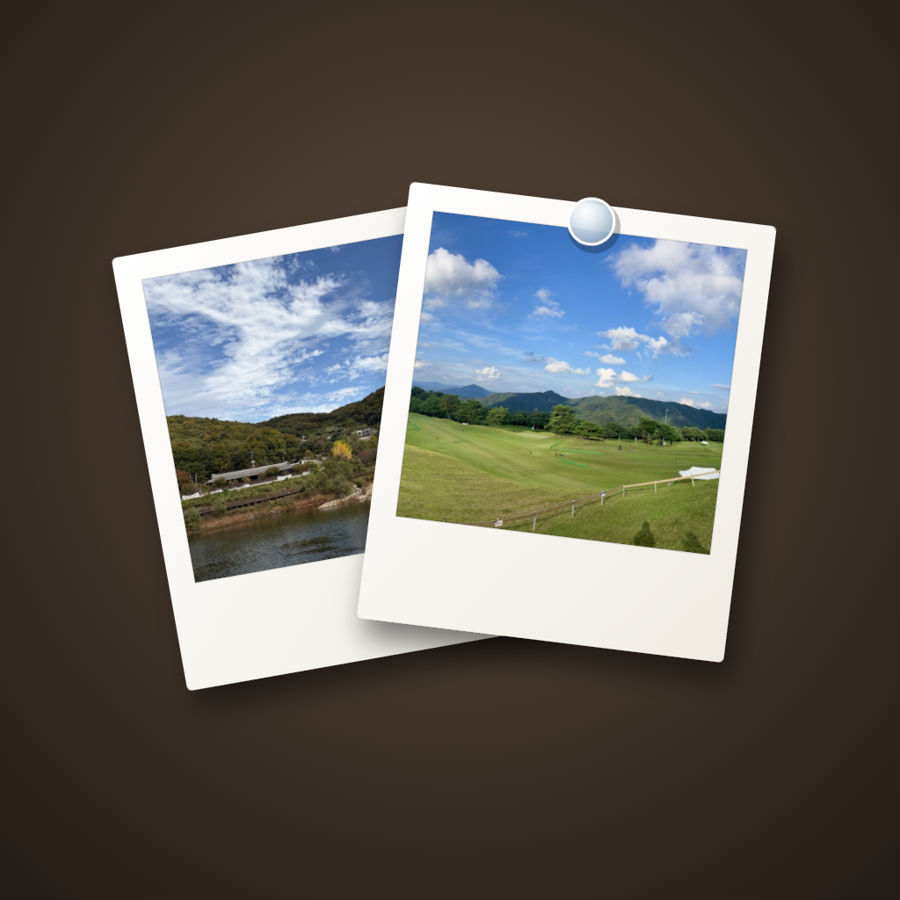

Photo Time
Your photos on a flip clock
A flip clock, the weather and calm music, with your own photos hanging below like prints on a wall.
Photo Time
플립 시계 위의 내 사진
플립 시계와 날씨, 잔잔한 음악, 그리고 그 아래 벽에 건 인화 사진처럼 걸린 나만의 사진.
Photo Time
フリップ時計に、あなたの写真を
フリップ時計と天気、穏やかな音楽。その下には、壁に飾ったプリントのようにあなたの写真が並びます。
Photo Time
翻页时钟上的你的照片
翻页时钟、天气和舒缓的音乐，下方挂着你自己的照片，就像墙上的相片。
Photo Time
翻頁時鐘上的你的照片
翻頁時鐘、天氣與舒緩的音樂，下方掛著你自己的照片，就像牆上的相片。
Photo Time
Tus fotos en un reloj de paletas
Un reloj de paletas, el tiempo y música tranquila, con tus propias fotos colgadas debajo como copias en una pared.
Photo Time
Suas fotos em um relógio flip
Um relógio flip, o clima e música tranquila, com suas próprias fotos penduradas logo abaixo, como cópias impressas na parede.
Photo Time
Vos photos sur une horloge à palettes
Une horloge à palettes, la météo et une musique apaisante, avec vos propres photos accrochées en dessous comme des tirages au mur.
Photo Time
Deine Fotos auf einer Klappuhr
Eine Klappuhr, das Wetter und ruhige Musik, darunter deine eigenen Fotos wie Abzüge an der Wand.
Photo Time
Le tue foto su un orologio a palette
Un orologio a palette, il meteo e musica rilassante, con le tue foto appese sotto come stampe alla parete.
Photo Time
Foto Anda di jam flip
Jam flip, cuaca, dan musik yang menenangkan, dengan foto Anda sendiri tergantung di bawahnya seperti cetakan foto di dinding.
Photo Time
Ảnh của bạn trên đồng hồ lật
Đồng hồ lật, thời tiết và nhạc êm dịu, cùng những bức ảnh của chính bạn treo bên dưới như ảnh in trên tường.